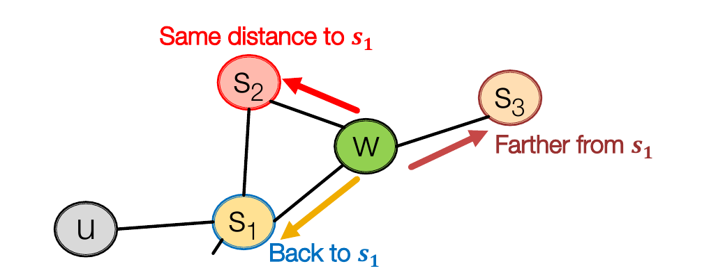
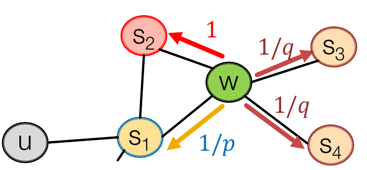

机器学习的第一件事是需要将训练所用的未处理的数据（raw data）转化为具有一定格式的数据（structured data）。这个过程就是特征工程。例如对于自然语言处理而言，从文档到词向量嵌入（word embedding）的过程就是特征工程。在最初的机器学习中，很多特征工程是根据一些算法得出数据的特征，进而进行编码，但深度学习时代来临后，找寻特征这一过程也可以根据不同的任务让网络自己学习，例如 word embedding 所得到的上百维的向量，其实并不能指出每一个维度到底代表什么样的特征。在众多类型的数据中，图属于比较难表示的数据，因此入门图网络的第一课就是找寻图的表示学习方法。
一、Embedding Nodes（node2vec）
将节点通过一个编码器（encoder）映射为高维空间的向量来表示节点。映射后的向量需要满足的条件是：两个节点对应的向量能反应这两个节点在原图中的相似性。向量的相似性即两者的夹角，因此可以用点乘来的值来表示。如果需要表示的节点为$u,v$，而经 encoder 得到的向量为$\bf{z_v},\bf{z_u}$，则应满足：
$$
similarity(u, v)\approx \bf{z_v}^T\bf{z_u}
$$
因此图中节点的表示学习的方法就可以用三个步骤表示：
- 定义一个 encoder，用来将节点的 one-hot 编码映射成固定维度的向量
- 定义一个描述原图中两个节点相似性的函数 $similarity$
- 优化 encoder 中的参数使得最后符合 $similarity(u, v)\approx \bf{z_v}^T\bf{z_u}$
1. 定义 encoder
此部分比较简单，参考NLP中的 word embedding，只需要对 one-hot 的编码进行矩阵乘即可。
$$
\begin{array}{cc}
v \in \mathbb{I}^{|V|}\\
\bf{Z} \in\mathbb{R}^{d\times |V|}
\end{array}
$$
则对应节点 $v$ 的嵌入向量为：
$$
\mathbf{z_v} =\mathbf{Z} v,\ \mathbf{z_v}\in \mathbb{R}^d
$$
这样的方法其实相当于 embedding 矩阵 $\mathbf{Z}$ 的每一列就对应一个节点的表示向量。维度 $d$ 是超参，在网络构建前确定。
2. 定义 similarity
这部分是节点表示学习的关键，不同的 similarity 定义的方法会带来不同的损失函数，节点最后的表示向量的适用任务也不一样。比较容易想到的有两种定义 similarity 的方法：
- 两个点相互连接则定义为相似（Adjaceny-based）
- 两个点的共同的邻居数量表示相似程度（Multi-hop similarity definations）
但这两种显然都只是考虑了图的局部性质，有比较大的局限性。因此更常用的方法是 Random Walk Approaches。
Random Walk Approaches
原理
首先定义什么叫 random walk：在给定的图中选定一个点$v$为起点，随机选择其邻接的点$v_1$作为下一个点，再随机选择$v_1$邻接的点$v_2$作为下一个点，直到路径达到指定的长度。这样随机选出的一个点序列称为一个 random walk。
那么可以定义两点（$u,v$）之间的相似度为这两点出现在同一条 random walk 中的概率。
使用这种定义方法的好处是同时考虑到了局部和全局的相似关系，因为根据不同的随机策略以及不同的路径长度可以均衡关注局部和关注全局的两种倾向。同时也不需要考虑所有的点对，只需要考虑在随机过程中每条random walk 中出现的点对即可。
生成策略
最简单的生成策略是固定路径的长度，每次随机一个邻接的点作为下一步。但这样的方式过于简单，无法对其的 focus 进行人工调整。因此在 node2vec 的实现当中，使用的是有偏的选择道路的方式（Biased Walks）。
两种经典的有偏的选择道路的方式即广度优先（BFS）和深度优先（DFS）。可以很明显地看出来，广度优先更聚焦于局部（Local）的节点连接状况（Micro-view of Neighborhood），深度优先则更关注全局（Global）的节点连接状况（Macro-view of Neighborhood）。与一个点连接的周围点根据其性质分为三种情况：前一个节点，距离起点一样的节点，距离起点更远的节点。

为了平衡这些关系，node2vec 在实现中定义了两个超参：
- p：return parameter，描述返回上一节点的概率
- q：in-out parameter，描述局部和全局的平衡
以$1、\frac{1}{q}、\frac{1}{p}$来表示前往更近的节点、前往更远的节点、返回前一节点的概率（还没有归一化）。例如对以下的图，$s_1$为父节点，$s_2$为距起点$u$距离为2的点，$s_3$和$s_4$为距起点距离为3的点，当前点为$w$，则前往$s_2$的概率为$\frac{1}{1+\frac{1}{p}+2\times \frac{1}{q}}$。

可以见到，越低的$p$值，越倾向于关注局部，越低的$q$值，越倾向于全局。给定不同的参数值，就可以对节点表示学习的关注点进行调节。
3. 参数优化（Optimization）
要使用梯度下降的方法进行训练，首先需要得到一个目标的损失函数。
损失函数（Loss）
以 $N_R(u)$ 表示以方法 $R$ 得到的点 $u$ 的邻居点集合，这些邻居点被认为是和点 $u$ 有一定程度相似的（邻居点不一定是邻接的点）。例如方法 $R$ 为 random walk approaches 时，$N_R(u)$ 表示的就是在点 $u$ 出现的所有 random walk 中的其他点的集合。注意这个集合中是允许出现重复点的，例如在 random walk approaches 中可能随机到往回走，这样某个点就可能多次被走到。
则优化目标应该是最大化给定各个点，$N_R$中的点是它们的邻居点的条件概率，同样用取 log 的方式将乘法变成加法：
$$
\max_z\sum_{u\in V}\log P(N_R(u)|u)
$$
用 softmax 方法进行点$v$是点$u$的邻居点的条件概率计算，则对应的损失函数为：
$$
\begin{array}{cc}
\mathcal L = \sum_{u\in V}\sum_{v \in N_R(u)}-\log P(v|\mathbf{z_u})\\
其中\ P(v|\mathbf{z_u}) = \frac{\exp(\mathbf{z_u}^T\mathbf{z_v})}{\sum_{n\in V}\mathbf{z_u}^T\mathbf{z_n}}
\end{array}
$$
负采样（Negative Sampling）简化
但是这么做对loss的计算复杂度是非常高的，在最外面的求和符号是$O(|V|)$的循环次数，在计算 softmax 的时候又需要循环 $O(|V|)$ 次，总共是 $O(|V|^2)$ 的复杂度。因此在实际使用中采取负采样（negative sampling）的方法进行近似（注意是效果上的近似，并不能靠数学公式推导得出）：
$$
\begin{array}{cc}
\log(\frac{\exp(\mathbf{z_u}^T\mathbf{z_v})}{\sum_{n\in V}\mathbf{z_u}^T\mathbf{z_n}})\approx \log(\sigma (\mathbf{z_u}^T\mathbf{z_v}))) - \sum_{i=1}^k \log (\sigma(\mathbf{z_u}^T\mathbf{z_{n_i}}))) \\
其中\ \sigma\ 是 sigmoid 函数 f(x) = \frac{1}{1+e^{-x}}，n_i是在所有点的编号中进行随机选取的编号
\end{array}
$$
严格来说约等号的两侧是不同的函数，但优化后者一定程度上和优化前者得到的效果是一样的。负采样的思想是得到一个点的“真实得分”，再加上一些“噪声”作为最后的得分。这也就是为什么需要加用sigmoid函数，因此sigmoid函数可以把实数映射到$(0, 1]$区间，正好作为概率的代表。其中$k$的取值越大，训练的结果泛化能力越强，一般情况下$k$取 5～20。
二、Embedding Entire Graph
有了对节点的表示学习之后，还可以进一步对一张图（整图或子图）进行编码。常见的也有三种方法。
1. 加和/平均
首先使用 node2vec 方法编码每个节点，再将需要编码的图中的每个节点的编码加和或取平均作为图的编码。
2. 超节点（super-node）表示
新增一个超节点（super-node），该节点与需要表示的图中的每个节点都连有一条边，再进行一次 node2vec 操作，用这个节点的编码来表示图的编码。
3. Anonymous Walk Embedding
继续使用 random walk approaches 的想法，对于相同形式的 random walk，将它们归为同一类。例如某一个路径为$A - B - A - C$，另一条路径为$D-A-D-F$，两条路径的模式均为$1-2-1-3$，则归为同一类，这就是一个 Anonymous Walk。给定路径长作为超参，枚举所有路径模式及其出现频率，用最大似然法近似这些模式的分布，得到图的编码。
这种想法的缺点在于枚举所有的路径非常耗时，当路径长增长时复杂度是指数增长的。因此另一种想法是对路径模式进行采样，随机产生 $m$ 条 random walk 并计算它们的路径模式，用以近似真实的路径模式分布。其中要使误差超过$\varepsilon$的小于$\delta$时需要的采样数 $m$ 满足：
$$
\begin{array}{cc}
m=\lceil\frac{2}{\varepsilon^2}(\log (2^\eta - 2)-\log(\delta)) \rceil\\
其中\log以e为底，\eta 为给定路径长下路径模式的总种类数
\end{array}
$$
除此之外，还有一种想法是直接将 Anonymous Walk 编码，使一个由多个 Anonymous Walk 组成的序列变得可预测。具体内容参见文献：Anonymous Walk Embeddings, ICML 2018。
Reference
[1] Stanford CS224W: Machine Learning with Graphs，Lecture 7 - Graph Representation Learning